on
제비스코(제비표 페인트) 홈쇼핑 영상 제작기
“안녕하세요. 정지용 PD님 강남제비스코 김OO대리입니다…“
촬영 약 10일전 아는 대표님을 통해 제비표페인트에서 연락이 왔습니다.
이제는 홈쇼핑 영상을 만들랍니다.
상업 광고 영상을 만들라고해도 어려운데 방송에 쓰이는 영상이라뇨…
KT에서 운영하는 케이쇼핑에서 방송을하고 납기일은 약 20일 정도 남았다고 했습니다.
기획부터 촬영, 편집까지 너무 빠듯했습니다.
근데 돈 때문에 욕심이 생겼습니다.
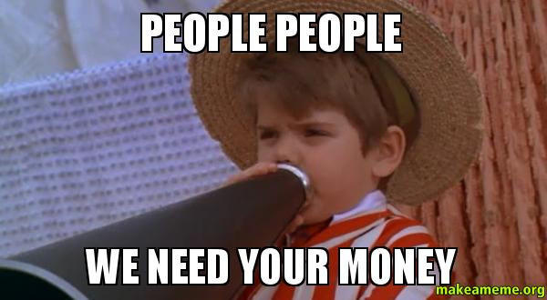
pre-production.
그래서 바로 제비스코 이번 프로젝트 담당자분과 미팅을 했습니다.
김대리님(클라이언트)의 요구사항은 다음과 같습니다.
- 페인트를 칠하고 나서 Before & After가 드라마틱하게 보여지면 좋겠다.
- 제비표페인트가 제비스코라고 이름을 바꾸었다. 이를 알릴 수 있는 꼭지(파트)가 있었으면 좋겠다.
- 다른 가정용 페인트와 다르게 가격이 저렴하다는 점을 강조해달라.
- 등등 …
몇가지 더 있는데 사소한거라 이렇게 세개를 강조하셨습니다.
그렇게 바로 기획을 시작했습니다.
기획서 초안을 보내드렸더니 바로 마음에 드시다고 OK 하셔서 깜짝놀랐습니다.(보통 전체적으로 2~3번 갈아 엎습니다.)
그렇게 바로 스토리보드 작화를 시작했습니다.
이때 대구에 일이 있어서 이동하면서 고속버스안에서 작업했습니다ㅠㅠ
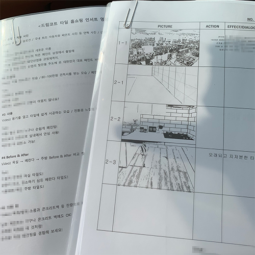
production.
촬영은 이틀 잡았습니다. 첫째날 오후 2시에 렌탈샵에서 장비 빌리고 양평의 펜션까지 2시간 정도 걸렸습니다.
도착하자마자 짐을 풀고 고기파티를 했습니다.
그러고 집을 갔어야 했는데 다음날이 찾아왔습니다.
어제밤에 자기전에 장비세팅을 미리해두긴 했지만 다시한번 더 점검하고 촬영동선을 짭니다.
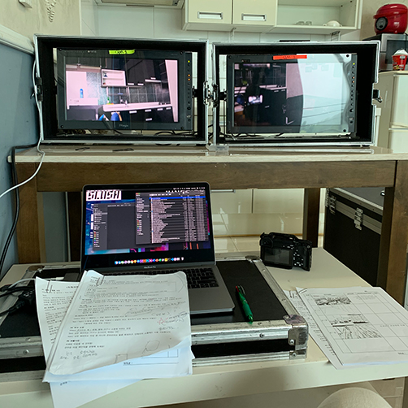
오전 8시 본격적으로 촬영을 시작했습니다.
제비스코 직원분들이 오셔서 페인트칠을 해주시고 그 장면을 촬영하고 배우 연기하는 것도 촬영하고 모두 순조로웠습니다.
그런데 갑자기 비가 오기 시작했고 페인트가 늦게 마르기 시작했습니다.
장비 렌탈한 시간도 있고 촬영을 6시 전에는 끝내야하는데 계획에 차질이 생기기 시작했습니다.
그래서 우선 공간은 없지만 찍을 수 있는 것부터 순서 상관없이 찍기로 하고 막 찍었습니다.
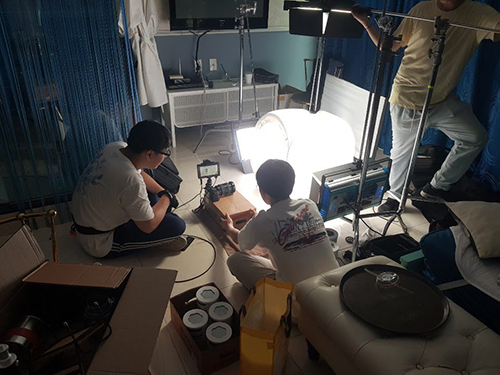
선풍기도 빌리고 에어컨도 틀어서 최대한 페인트 말리고 촬영을 끝내니 밤 9시였습니다.
10시쯤 서울에 도착해서 장비 반납하고 집에 막차를 타고 겨우 갔습니다.
(빨리 돈을 벌어서 차를 사야지….)
post-production.
납기일이 얼마 안남아서 집에 오지마자 바로 데이터들 백업하고 다음날 아침부터 편집을 시작했습니다.
컷들도 이쁘게 나오고 생각보다 촬영도 잘 되어 편집하는데 크게 어려움이 없었습니다.
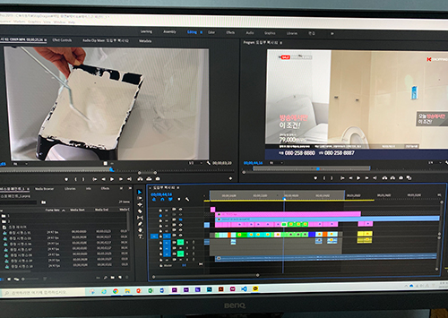
가끔 편집하다 힘들면 (롤토)체스로 머리를 식혀줍니다.
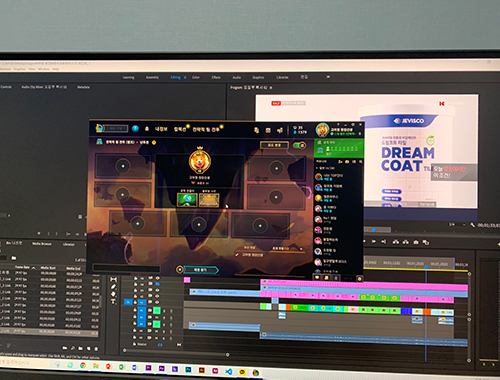
편집을 하다보면 이렇게 찍은게 어떻게 이렇게 편집할 수 있을까… 저도 놀라는 씬이 나옵니다.
촬영도중에 대리님이 친환경적인 느낌을 주는 씬을 만들어 달라고 하셔서 급하게 장소를 물색하다가 찾은 곳입니다.
아무 연출이나 소품없이 딱 풀과 강, 나무를 뒤로 하고 배경을 따고 촬영했습니다.(미래를 생각하지 않고 편집으로 어케든 하려는 생각…)
좋아 보이는 것들의 비밀.jpg
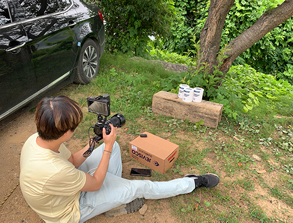
이렇게 찍은 화면이….
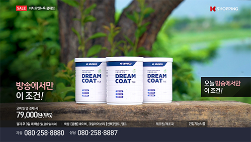
이렇게 변했습니다!
정말 내가 봐도 놀라워…..
그리고 DI하고 종편까지 싹 마친 후 피드백을 받으러 메일을 보냈습니다.
거의 십분만에 피드백이 왔는데 정말 놀라웠습니다….
지금까지 만나본 클라이언트 중 제일 편한 클라이언트
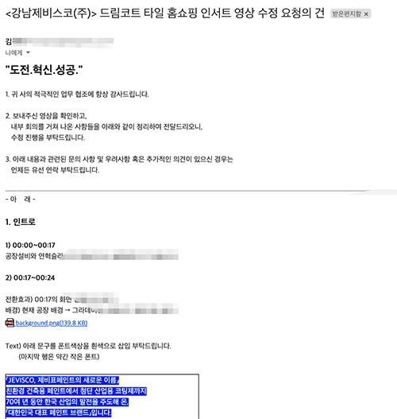
진짜 천사 클라이언트…
이렇게 잘 정리해주시고 전화로 설명까지 해주시는 클라이언트 어디 없습니다.
보통 “아 조금 심플한테 화려하게 해주세요”라고 수정이 들어옵니다.(?!)
그렇게 수정사항 수정 몇번 왔다갔다하고 방송 심의를 봤습니다.
생각보다 심의가 빡세더라구요
뭐 나오면 안되구 뭐 넣어야하고…
마침내 방송날이 왔고 무사히 생방송을 마쳤습니다.
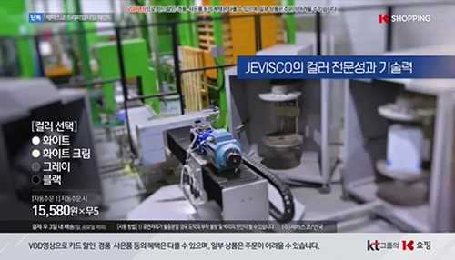
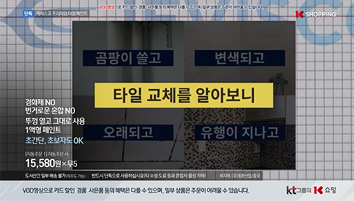
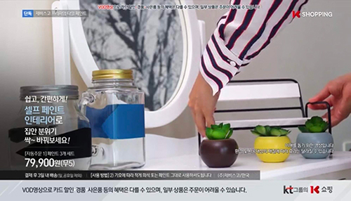
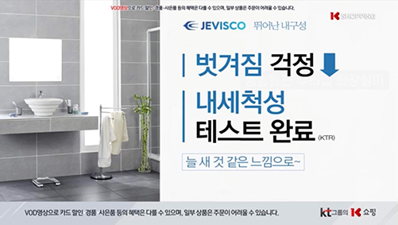
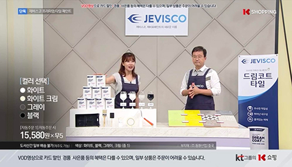
또돵ㅎㅎㅎ
막짤은 열심히 이래라 저래라 하는 나 ㅎㅎ
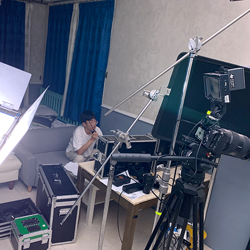
저렇게 일해서 그런지 이 프로젝트 내내 PD라고 불렸습니다 ㅋㅋㅋㅋㅋㅋ
열심히 이쁘게 촬영해줘서 고마운 신준이(전날 같은 침대 씀)
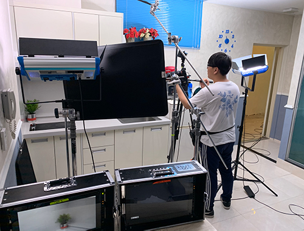